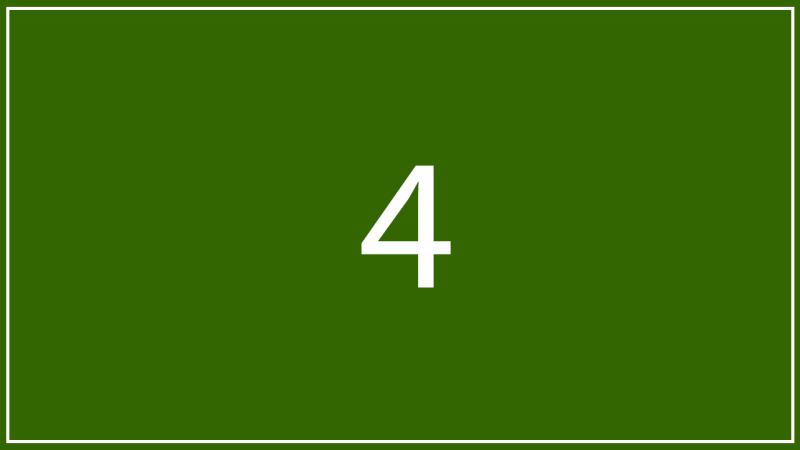

자연에 스며든 건축, 그 속의 예술
나오시마 미식 워킹투어
한국어 해설 부재의 갈증을 해결합니다.
미술관 사전 해설과 맛있는 식사가 있는
균형 잡힌 당일 여행.
08:12 집결
(Full day)
소규모 집중
전문 가이드
- ✔ 미술관만 찍는 '숙제 같은 여행'이 싫으신 분
- ✔ 작품의 배경과 건축 의도를 한국어로 듣고 싶은 분
- ✔ 편의점 빵 대신 제대로 된 현지 식사를 원하시는 분
왜 이 투어여야 할까요?
유일무이 한국어 해설
현재 시장에 전무한 한국어 가이드 투어.
그냥 보면 '벽'이지만, 알고 보면 '감동'이 됩니다.
선택과 집중의 미학
오전엔 지중미술관 집중,
오후엔 마을 산책과 휴식.
다리 아픈 강행군이 아닌 '여행'을 합니다.
실패 없는 '혼무라 미식회'
관광지 급식 식사는 이제 그만.
가이드가 엄선한 로컬 맛집 리스트를 제공하고
자유로운 식사 시간을 보장합니다.

📍 혼무라 지구의 여유로운 점심 시간
🗺️ 투어 코스 안내 현지 상황에 따라 변동 가능
다카마쓰항 미팅 & 출항
갑판에서 바다를 감상하며 여행 기분 UP!
이동 중 작가 및 건축 배경 사전 브리핑 진행.
나오시마 도착 & 빨간 호박
구사마 야요이의 '빨간 호박'과 'I♥YU' 목욕탕 앞 인증샷 타임.
지중 미술관 집중 관람
자연광이 가장 아름다운 시간대에 모네와 제임스 터렐을 만납니다. 땅속에 지어진 안도 타다오의 건축 미학을 느껴보세요.

베네세 하우스 & 노란 호박
바다 풍경을 보며 힐링 산책.
나오시마의 아이콘 '노란 호박' 앞에서 인생샷을 남깁니다.
혼무라 미식회 (자유식)
100분의 여유로운 시간.
가이드가 추천하는 맛집에서 식사하고,
고민가 카페에서 커피 한 잔의 여유를 즐기세요.
이에(家) 프로젝트 골목 산책
오래된 빈집을 예술 작품으로 바꾼 골목길을 탐방합니다. (미나미데라, 고오 신사 등 자율 관람)
다카마쓰항 도착 및 해산
수고하셨습니다! 즐거운 저녁 되세요.
건축과 예술을 사랑하는
전문 가이드입니다

"혼자 가면 30%밖에 보이지 않지만,
설명을 들으면 120%가 보입니다."
다카마쓰 직항으로 오시는 여러분께
나오시마의 진짜 매력을 알려드리고 싶어
이 투어를 기획했습니다.
✅ 예약 전 확인해주세요
왕복 페리(고속선 승선권), 지중미술관 입장료, 섬 내 버스비, 전문 가이드 해설 및 송수신기
점심 식사 비용, 자유시간 중 방문 미술관 입장료 기타 개인 경비
- 많이 걷는 투어입니다. 편한 신발을 착용해주세요.
- 우천 시에도 정상 진행됩니다. (실내 위주)